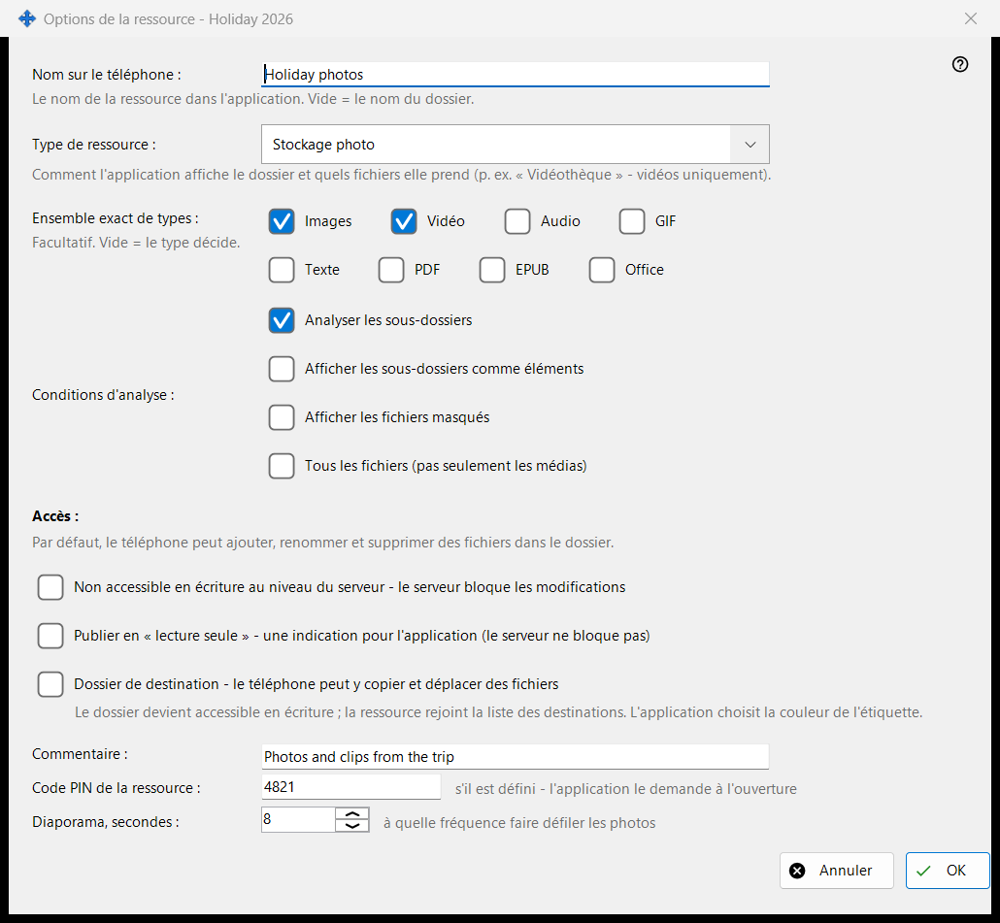
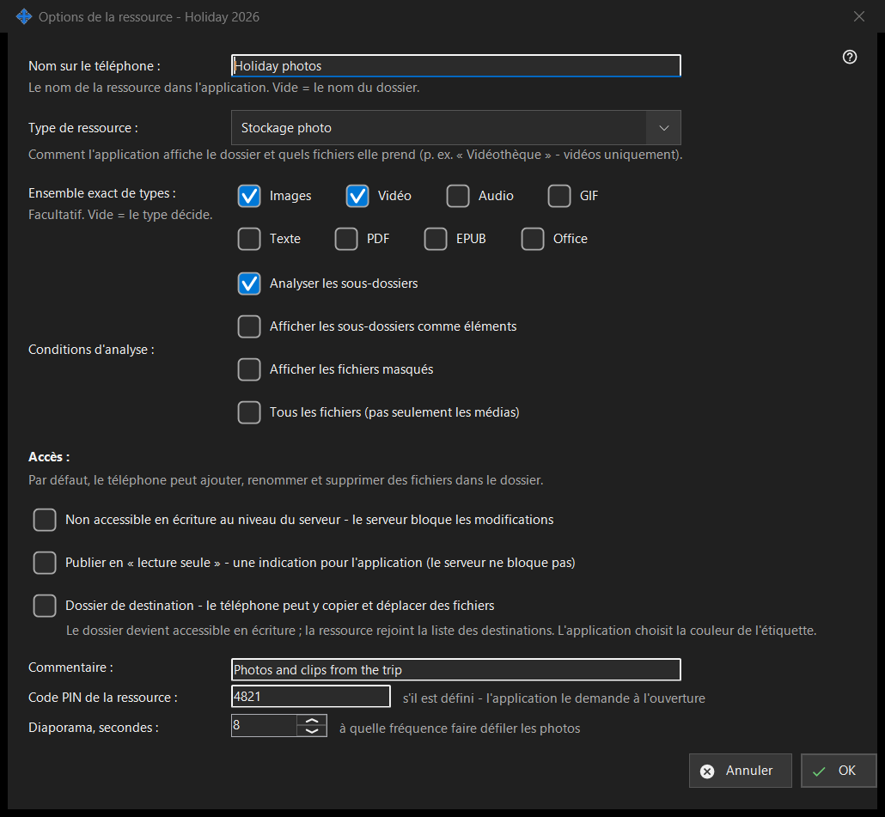

Options de la ressource
Objectif
Options d'un dossier partagé : son nom sur le téléphone, le type, les fichiers affichés, qui peut les modifier et quelques extras. Elle s'ouvre depuis «Modifier» dans la fenêtre principale, depuis une ligne de dossier et depuis l'assistant de ressource. Le titre réel de la fenêtre se termine par le nom du dossier.


Dans cet ordre
- Définissez le nom que le téléphone affichera.
- Choisissez le type de ressource ou un ensemble exact de médias.
- Définissez les conditions d'analyse.
- Choisissez l'accès.
- Ouvrez «Options avancées» pour un commentaire, un code PIN et l'intervalle du diaporama.
- Appuyez sur OK.
Les éléments
Nom et type
«Nom sur le téléphone :» est le nom sous lequel le dossier apparaît dans l'application ; vide signifie le nom du dossier. «Type de ressource :» propose Dossier ordinaire, Bibliothèque audio, Vidéothèque, Stockage photo et Documents. «Ensemble exact de types :» choisit les genres exacts (Images, Vidéo, Audio, Texte, Tous les fichiers) ; vide signifie que le type décide.
Conditions d'analyse
«Analyser les sous-dossiers», «Afficher les sous-dossiers comme éléments», «Afficher les fichiers masqués» et «Tous les fichiers (pas seulement les médias)».
Accès
Par défaut, le téléphone peut ajouter, renommer et supprimer des fichiers dans le dossier. «Lecture seule» est un vrai verrou : le serveur refuse les modifications. Une indication de lecture seule dit seulement à l'application de masquer les boutons de modification ; le serveur ne bloque rien. Un dossier de destination peut recevoir des copies et des déplacements depuis le téléphone ; il devient accessible en écriture et rejoint la liste des destinataires, et sa couleur est choisie par l'application.
Options avancées
Un commentaire (facultatif), un code PIN pour la ressource (l'application le demande à l'ouverture de la ressource) et l'intervalle du diaporama en secondes. Les réglages sont envoyés au serveur lorsque vous confirmez.
Paramètres du gestionnaire · Paramètres de partage SFTP · Paramètres du serveur d’échange